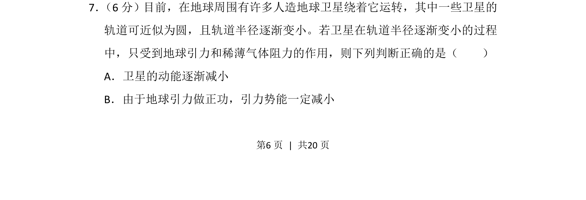
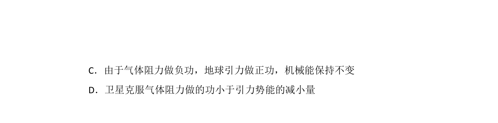
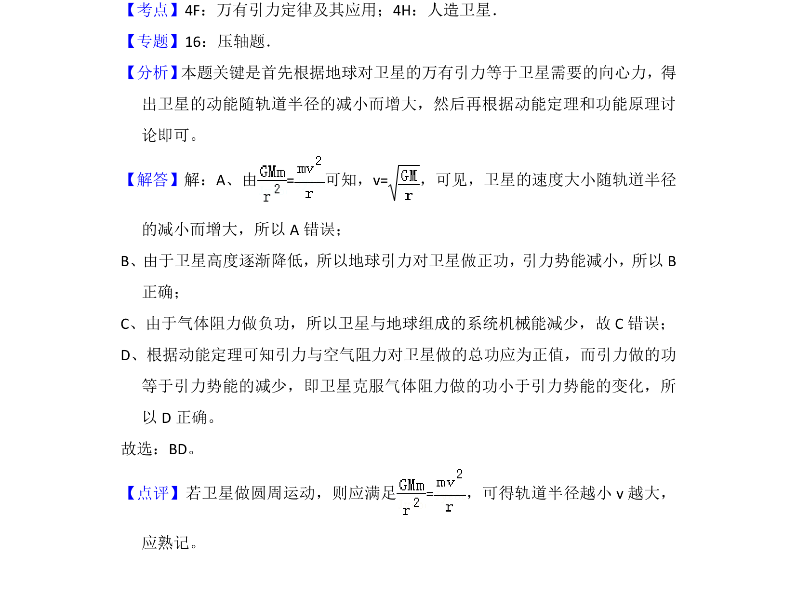

考点：万有引力定律 卫星运动 动能 引力势能


卫星在稀薄气体阻力下轨道半径减小时，动能和引力势能的变化判断。

📄 原 PDF 第 6 页：
素材/真题/吉林/2008-2024·（吉林）物理高考真题/2013年高考物理试卷（新课标Ⅱ）（解析卷）.pdf
7． （6分）目前，在地球周围有许多人造地球卫星绕着它运转，其中一些卫星的 轨道可近似为圆，且轨道半径逐渐变小。若卫星在轨道半径逐渐变小的过程 中，只受到地球引力和稀薄气体阻力的作用，则下列判断正确的是（ ） A．卫星的动能逐渐减小 B．由于地球引力做正功，引力势能一定减小